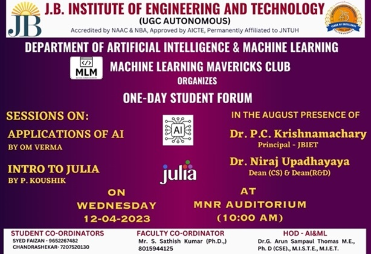
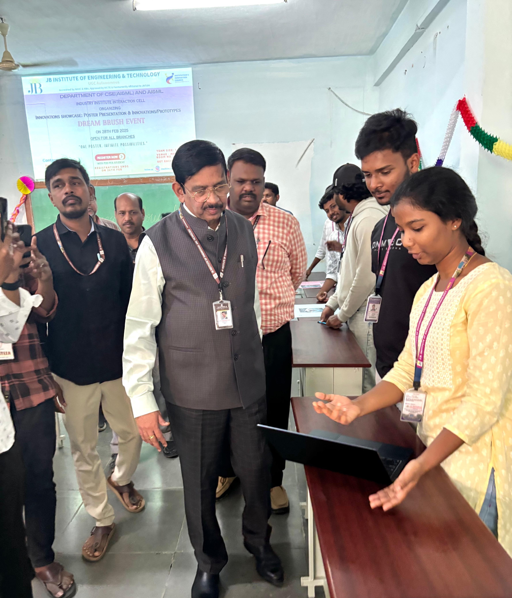
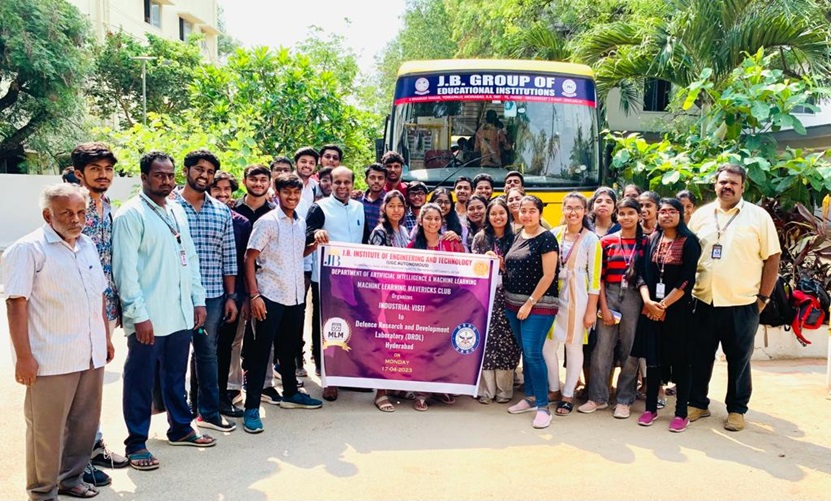
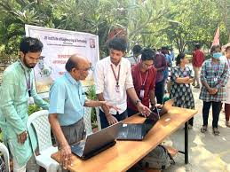

Message from HOD

Dr G. Kumar
Welcome to the Machine Learning Mavericks club!
I am pleased to extend my appreciation to the Machine Learning Mavericks club for its efforts in promoting technical learning and innovation within the CSE(AI & ML) and AI & ML Department. The club provides a valuable platform for students to enhance their skills, explore emerging technologies, and work collaboratively toward meaningful outcomes. I encourage all members to continue their dedication, uphold academic excellence, and make the best use of this initiative. I am confident that the club will achieve great progress and contribute positively to the department. I wish the Machine Learning Mavericks continued success
Mission
- To provide a platform for students to learn and implement machine learning technologies in real-world scenarios.
- To organize technical workshops, seminars, and hackathons to enhance technical skills.
- To encourage ML competitions & project participation.
- To collaborate with industry experts & academia.
- To foster innovation and creativity in ML applications.
- To provide networking opportunities with professionals.
- To promote ML for social good & community development.
Gallery



